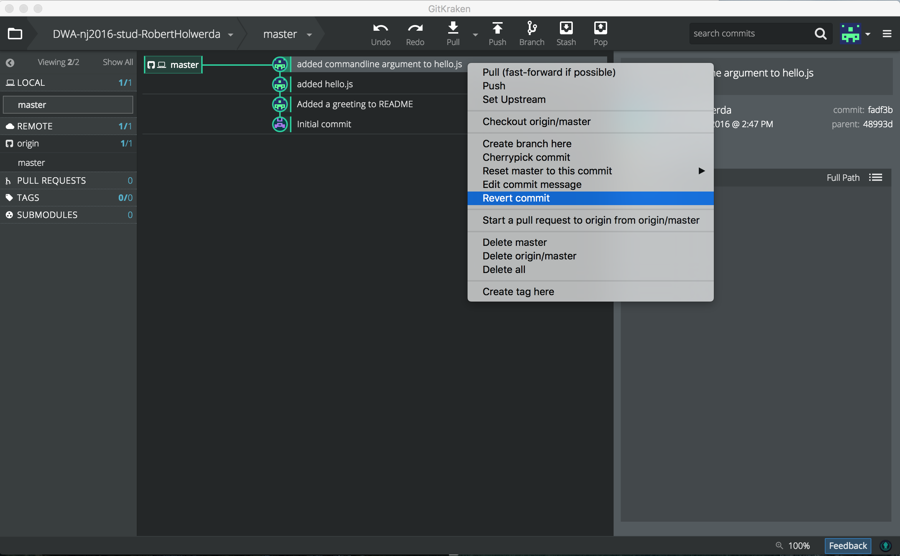
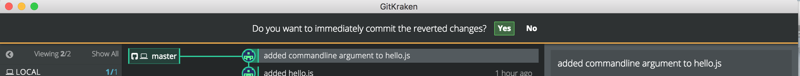
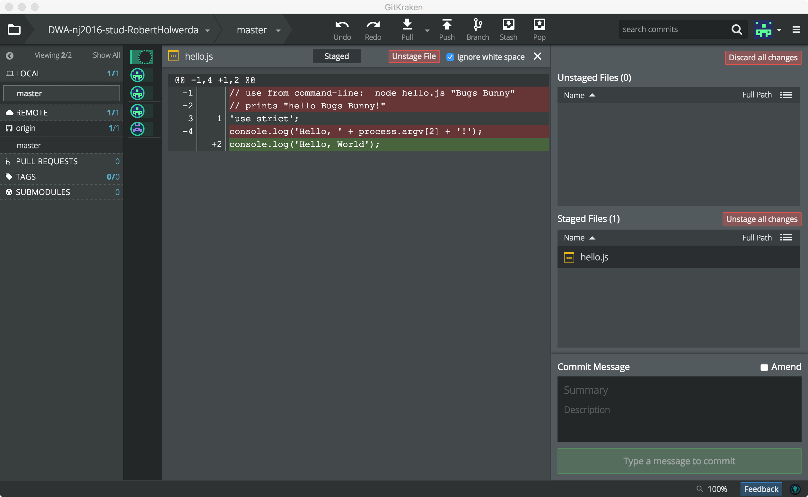

lab 7 Committing Changes
Goals
- Learn how to undo changes to the working directory by reverting to the last commit.
GitKraken has "Undo" and "Redo" buttons. You can use the Undo button to undo, for example, the last commit. In this tutorial we're not going to do that, however: Undo is a feature specific to GitKraken. Most other Git tools don't have an Undo option. Instead, the process of discarding the changes in a commit in "normal" Git (and other tools) is called "reverting the commit".
It is more useful to gain experience in regular reverts than in GitKraken-specific tricks. Luckily, GitKraken does support reverting commits.
Revert the local change 01
You can discard all changes to the file(s) in your working directory by reverting to your last commit.
But First:
Make sure the middle column of GitKraken is showing the commit history. If it is obscured by the panel showing changes in a source code file, close that panel first.
Also, make sure your repo is clean: There should be no uncomitted changes in either the "Unstaged Files" box or the "Stages Files" box. No "WIP" line either.
Revert the last commit:
Perform a right-mouse-click on the very last commit (the one where you added functionality to hello.js). You should see a menu appear:
Select "revert commit".
Two things happen (one visible, one invisible):
- The files in your working directory are "changed back": They now reflect how things were at the last-but-one commit (which is the state you're reverting to).
- GitKraken asks you if you want to store this reversal into a new commit.

This is important to understand: reverting a commit does not delete the commit you're reverting. It simply changes the files back to a previous state, and if those reversals are what you want to keep, you can commit them in a new commit. The old one is not thrown away, but kept as part of the history of the project.
Answer "No" to the question about committing the reverted changes.
Inspect the effect of the revert.02
A new "WIP" line has appeared in the commit history. Apparently, the revert has caused changes to your file(s).
Look at the diff for 'hello.js'. Notice that the pattern of red and green lines is extacly the reverse of the diff you saw in the previous 'lab':
Commit the reverted repo
And push it to Github.